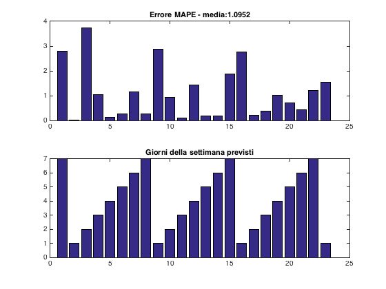

BENCHMARK:
Calcola l'errore di predizione per tutte le settimane dell'Ottobre di un anno specificato (usato come validazione) e ne calcola la media. Restituisce l'errore percentuale assoluto (MAPE).
Contents
Pulizia dal lavoro precedente
clear all close all clc
IMPOSTAZIONE PARAMETRI
validation_year = 2011;
Preparazione dei dati
% Caricamento dati di interesse. load datiOTT loads = datiOTT(:,2); years = datiOTT(:,3); % Estrapolazione delle righe dati dell'ottobre dell'anno di validazione. % Il benchmark esclude la previsione del 31 ottobre per la sua irregolarita dati_anno_campione = datiOTT(years == validation_year, :); numero_giorni_campione = length(dati_anno_campione); num_settimane_campione = numero_giorni_campione-8; % Escludo ultima settimana
STAMPA a schermo degli intervalli di date di identificazione-validazione
disp('Anno dei dati di validazione: ') disp(num2str(validation_year)) % disp('Anni dei dati di identificazione: ') % disp(strcat(num2str(min(years)), '/', ' ', num2str(max(years(years < validation_year)))))
Anno dei dati di validazione: 2011
Stima errore
Usando come dati di validazione di volta in volta tutte le possibili settimane di Ottobre dell'anno di validazione, stimo gli errori, salvandoli in un vettore "errore" di cui faccio poi la media.
erroreMAPE = zeros(1, num_settimane_campione); giorno_successivo = zeros(1, num_settimane_campione); for i = 1:(num_settimane_campione) datiWeek = dati_anno_campione(i:(i+6),:); L_true = dati_anno_campione(i+7,2); L_hat = predizione(datiWeek); erroreMAPE(i) = 100*(abs(L_hat - L_true)/L_true); % Creazione del vettore che immagazzina il giorno per cui è effettuata % la previsione giorni_settimana = datiWeek(:, 6); giorno_successivo(i) = giorni_settimana(7)+1; if giorno_successivo(i) > 7, giorno_successivo(i) = 1; end end % Calcoolo mediaMAPE = mean(erroreMAPE); % Visualizzo il risultato del benchmark in uns figura. figure('NumberTitle', 'off', 'Name', 'Errore MAPE') subplot(2, 1, 1) bar(erroreMAPE) title(strcat('Errore MAPE - media: ', num2str(mediaMAPE))) subplot(2, 1, 2) bar(giorno_successivo) title(strcat('Giorni della settimana previsti'))